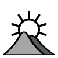
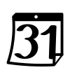

| kodo |
|
fako |
AGR |
|
agrokulturo |
ANA |
|
homa anatomio, histologio |
ARKE |
|
arkeologio |
ARKI |
|
arkitekturo |
AST |
|
astronomio |
AUT |
|
aŭtomobiloj |
AVI |
 |
aviado |
BAK |
|
bakteriologio, virusologio |
BELA |
|
belartoj |
BELE |
|
beletro |
BIB |
|
biblio |
BIO |
|
biologio, biontologio |
BOT |
|
botaniko |
BUD |
|
budhismo |
EKON |
|
ekonomiko, financo, komerco |
EKOL |
|
ekologio |
ELE |
|
elektro |
ELET |
|
elektrotekniko |
ESP |
|
esperantismo |
FER |
|
fervojoj |
FIL |
|
filozofio |
FIZL |
|
fiziologio |
FIZ |
|
fiziko |
FON |
|
fonetiko |
FOT |
|
fotografio, optiko |
GEN |
|
genealogio |
GEOD |
|
geodezio, topografio |
GEOG |
 |
geografio |
GEOL |
|
geologio |
GRA |
|
gramatiko |
HER |
 |
heraldiko |
HIN |
|
hinduismo |
HIS |
 |
historio |
HOR |
|
hortikulturo, arbokulturo, silvikulturo |
ISL |
|
islamo |
JUR |
|
juro |
KAL |
 |
kalendaro, tempomezurado |
KAT |
|
katolikismo |
KEM |
|
kemio, biokemio |
KIN |
|
kinoarto |
KIR |
|
kirurgio |
KOMP |
|
komputiko |
KON |
|
konstrutekniko |
KRI |
 |
kristanismo |
KUI |
|
kuirarto |
LIN |
|
lingvistiko, filologio |
MAR |
 |
maraferoj |
MAS |
|
maŝinoj, mekaniko |
MAT |
|
matematiko |
MAH |
|
materialismo historia |
MED |
|
medicino, farmacio |
MET |
|
meteologio |
MIL |
|
militaferoj |
MIN |
|
mineralogio |
MIT |
|
mitologio |
MUZ |
|
muziko |
NOM |
|
nomoj |
PAL |
|
paleontologio |
PED |
|
pedagogio |
PERS |
|
personoj |
POE |
|
poetiko, poezio |
POL |
|
politiko, sociologio, administrado |
POSX |
|
poŝto |
PRA |
|
prahistorio |
PSI |
|
psikologio, psikiatrio |
RAD |
|
radiofonio |
REL |
|
religioj |
RET |
|
retoj, Interreto |
SCI |
|
sciencoj |
SPO |
|
sporto, ludoj |
SHI |
|
ŝipkonstruado, navigado |
TEA |
|
teatro |
TEK |
 |
teknikoj |
TEKS |
|
teksindustrio, vestoj |
TEL |
|
telekomunikoj |
TIP |
|
presarto, libroj |
TRA |
|
trafiko |
ZOO |
|
zoologio |